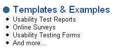

Web page links are the primary means by which users navigate Web sites. If users do not notice, or do not think, that links are clickable, they may not use the links.
Underlining Pros
Simply put, there’s no guessing when links are presented consistently. Links are easy to find because users understand that underlined text means that it’s a link. The underlining draws their attention. When you remove the burdens for users, you prevent delays and speed access to desired content.
Underlining for emphasis should be avoided, as well as the use of non-traditional colors for links. For example, your users will wonder:
- Is the text clickable?
- Or is it just being emphasized?
Underlining Cons
If you choose to not underline links, keep in mind that you want to avoid misleading cues. The signal to select a link should be unambiguous; it should also be used consistently throughout you site.
Besides visual clutter, there are times when underlined links may not be appropriate, such as in left navigation and in tabbed navigation. In a long list, especially bulleted ones, the overwhelming amount of text and underlining hampers readability. The visual clutter may be especially rampant on home pages that are link and text heavy, as well as on index pages and launch pages.
In Practice
In the example below, the larger header text, "Templates & Examples," is in blue text and is preceded by a larger bullet graphic. In our usability testing, we found that people clicked on the "Templates & Examples" text without hesitation.

This approach was put into practice on the Usability.gov home page because it’s text-rich; in addition, having all links underlined would detract from the readability of the site. When we tested the site with users, we found that the header text with the oversized bullet and with the blue text denoted clickability.
Conclusion
Links should be organized and presented in such a way that users should be able to intuit "clickability." The specific solution, underlined or not, is less important than consistently using one or the other. For example, if no underlining is preferred, this can be accomplished with (unlinked) bulleted text below a title with blue text.
References
Bailey, R.W. (2000, October). Link affordance  .
.
Bailey, R.W., Koyani, S., & Nall, J. (2000, September 7). Usability testing of several health information Web sites, National Cancer Institute Technical Report. Bethesda, MD.
Clark, J. (2002). Type and colour. In Clark, J., Building accessible websites (pp. 199-218). Indianapolis, IN: New Riders.
Evans, M. (1998). Web design: An empiricist’s guide. Unpublished master’s thesis. Seattle: University of Washington.
Farkas, D.K. & Farkas, J.B. (2000). Guidelines for designing web navigation. Technical Communication, 47(3), 341-358.
Lynch, P.J. & Horton, S. (2002). Web style guide (2nd edition). New Haven, CO: Yale University Press.
Nielsen, J. (1990, March). The art of navigating through hypertext. Communications of the ACM, 33(3), 296-310.
Spool, J.M., Scanlon, T., Schroeder, W., Snyder, C., & DeAngelo, T. (1997). Web site usability: A designer’s guide. North Andover, MA: User Interface Engineering.
Tullis, T.S. (2001). Web usability lessons learned. Fidelity Center for Applied Technology Technical Report. Fidelity Investments.